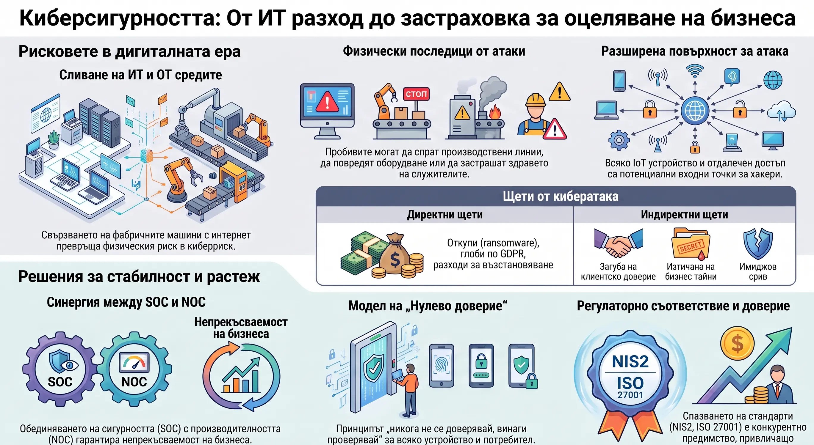

Ransomware · Prevention · Business resilience
Как да защитим фирма от ransomware?
Няма една мярка, която да премахне ransomware риска. Практичната защита комбинира видимост върху критичните активи, устойчиви идентичности, ограничаване на експозицията и страничното движение, откриване на подозрителна активност, защитени backup копия и упражнена реакция.

⚠️ Важна бележка: Тази публикация е с информационна и образователна цел и не представлява юридическо или правно тълкуване на приложимото законодателство. Обстоятелствата варират, а нормативните изисквания се променят. При конкретен казус се консултирайте с квалифициран юрист.
Кратък план: Започнете с критичните активи и акаунти; защитете email и remote access с MFA; ограничете ненужните exposed services и своевременно обработвайте критични уязвимости; приложете endpoint защита и least privilege; сегментирайте средата; пазете независими backup копия и проверявайте възстановяването; събирайте нужната telemetry и упражнявайте incident response. Приоритизирайте мерките според конкретните системи и бизнес риск — този план не е гаранция, че инцидент няма да се случи.
Започнете от активите и критичните процеси
Не може надеждно да се защити система, за която организацията няма inventory или owner. Запишете кои услуги, данни, endpoints, сървъри, cloud ресурси и third-party връзки поддържат критичните процеси. Определете зависимостите и реда за възстановяване, включително кой има authority да взема решения при прекъсване.
Това не е само технически списък. Бизнес owner-ите могат да уточнят допустимо прекъсване, загуба на данни, външни зависимости и нуждите за непрекъсваемост, за да се насочат ограничените ресурси към най-важните системи.
Намалете риска от компрометирани акаунти и initial access
- MFA за важните пътища: приоритизирайте email, VPN, remote administration, cloud consoles и privileged accounts; оценете phishing-resistant варианти, където са приложими.
- Least privilege и отделни admin identities: ограничете постоянните привилегии, преглеждайте неактивни/излишни акаунти и отделяйте ежедневната работа от административните операции.
- Remote access: премахнете ненужния публичен достъп до management услуги; ако отдалеченият достъп е нужен, ограничете го, актуализирайте го и наблюдавайте authentication събитията.
- Email и social engineering: комбинирайте филтриране и домейн защити с лесен процес за докладване на подозрителни съобщения и подходящо обучение.
- Third-party access: инвентаризирайте външните акаунти и инструменти, ограничете ги до необходимите ресурси и преглеждайте достъпа според договора и ролята.
Изискванията и възможностите зависят от технологиите и риска на организацията. Силната парола сама по себе си не заменя MFA, access review, patching и monitoring.
Ограничете изложените услуги и уязвимостите
Поддържайте процес за inventory, patching и приоритизиране на уязвимости. Обърнете внимание на internet-facing системи, remote access устройства, identity инфраструктура и софтуер, чиито известни уязвимости могат да бъдат релевантни към реалната среда. Приложимостта и сроковете се определят спрямо активите, наличните mitigation мерки и вътрешните изисквания.
Изключвайте неизползвани услуги и протоколи, преглеждайте конфигурациите и разделяйте business, server, management, backup и други чувствителни зони според архитектурата. Сегментацията цели да ограничи пътищата и въздействието; тя трябва да бъде тествана и поддържана, а не само описана в диаграма.
Подобрете endpoint защитата и наблюдението
Поддържайте endpoint security/EDR покритие на системите в обхвата, проверявайте дали агентите подават данни и задайте процес за анализ и ескалация на alerts. Добавете identity, firewall/VPN, DNS, cloud audit и други релевантни log източници, когато те помагат да се свържат активи, акаунти и времева линия.
Наблюдението трябва да води към действие: кой преглежда сигнала, как се потвърждава потенциален инцидент, кого се уведомява и как се одобрява containment. EDR или SOC могат да подпомогнат тези функции, но покритието и правата за реакция зависят от конфигурацията и договора.
Направете backup-ите възстановими, не само налични
- определете критичните datasets и възстановителните приоритети;
- поддържайте offline, изолирани или други защитени копия, подходящи за архитектурата;
- ограничете административния достъп до backup management и наблюдавайте промени/изтривания;
- проверявайте integrity и реалния restore процес редовно, не само успешния статус на backup job;
- записвайте резултатите от упражненията, времето, зависимостите и непокритите системи.
„Immutable“ или cloud копие не е автоматична гаранция за възстановяване: конфигурация, идентичности, retention, изтриване, ключове и зависимости трябва да се прегледат за конкретния доставчик и среда. Прочетете и отделното ръководство за ransomware backup strategy и услугата Backup и Disaster Recovery.
Подгответе incident response и възстановяване
Поддържайте ransomware incident response plan с роли, escalation contacts, out-of-band комуникация, decision authority и критерии за изолация/възстановяване. Уточнете как се пазят evidence и logs и как се координират IT, security, management, legal, communications, доставчици и застраховател, когато е приложимо.
Упражнявайте сценария с tabletop или технически recovery exercise, съобразен с възможностите на екипа. Проверете дали контактите работят, backup restore може да се извърши и чиста среда е достъпна. При реален инцидент следвайте одобрения план и специалистите; обща статия не заменя incident-specific решения.
Практичен план по приоритет
| Приоритет | Първи действия | Доказателство за напредък |
|---|---|---|
| 1. Видимост и достъп | Идентифицирайте критичните активи, проверете privileged/remote accounts, MFA и ненужно изложени услуги. | Актуален inventory, owner-и, access review и списък с външните услуги. |
| 2. Ограничаване | Приоритизирайте критичните patches, endpoint coverage, least privilege и сегментацията на важните системи. | Patch/exception tracking, endpoint health и проверени network boundaries. |
| 3. Възстановяване | Защитете backup administration и направете restore упражнение за критичен процес. | Резултат от recovery test, зависимости и записани gaps срещу целите. |
| 4. Detection и response | Проверете log coverage, escalation contacts и containment approvals; упражнете tabletop сценарий. | Работеща ескалация, action owners, incident notes и lessons learned. |
Приоритетите са начална рамка, не универсални срокове. Изберете следващите мерки спрямо експозицията, критичността, наличния капацитет и съществуващите компенсиращи контроли.
Често задавани въпроси
Може ли фирма да се защити напълно от ransomware?
Не може да се обещае нулев риск. Целта е да се намали вероятността и въздействието, да се подобри откриването и да има реалистичен път за възстановяване.
Кое да направим първо, ако ресурсите са ограничени?
Определете критичните активи и акаунти, осигурете MFA за ключовия remote/administrative достъп, проверете изложените услуги и възстановимостта на критичните backup-и. Конкретният ред зависи от средата и текущия риск.
Достатъчни ли са EDR и backups?
Те са важни контроли, но не покриват сами идентичности, изложени услуги, lateral movement, cloud/third-party достъп, логове, decision process и recovery dependencies.
Трябва ли всеки бизнес да купи SOC?
Не непременно. Организацията трябва да избере monitoring capability според риска, telemetry и вътрешния капацитет; може да е вътрешен, външен или хибриден модел с ясно договорени покритие и ескалации.